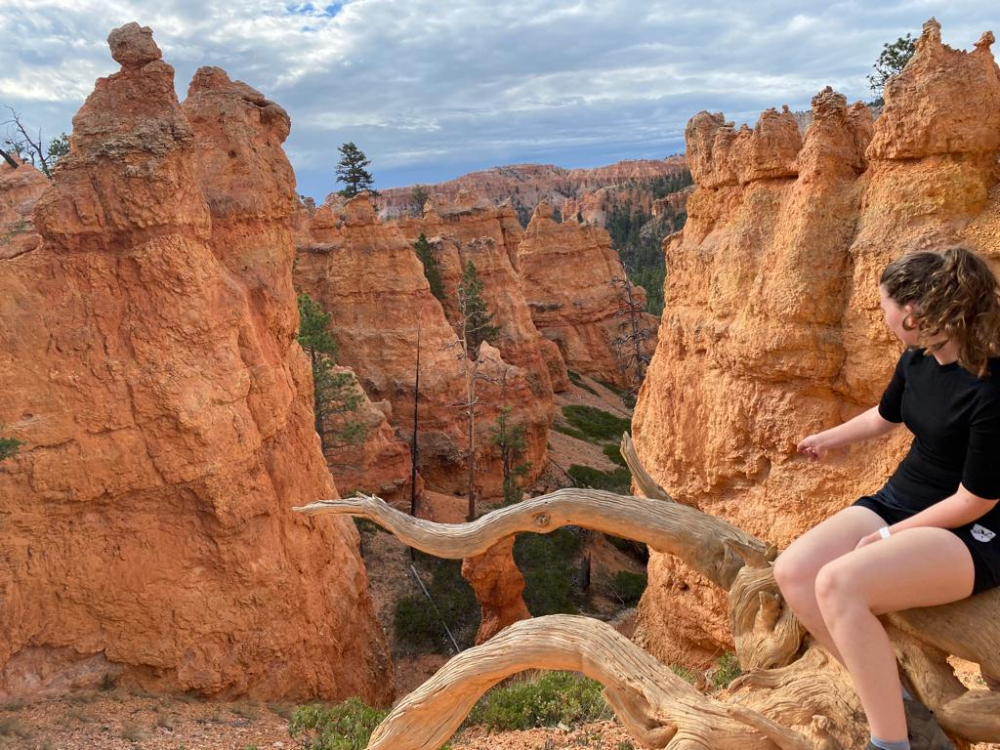
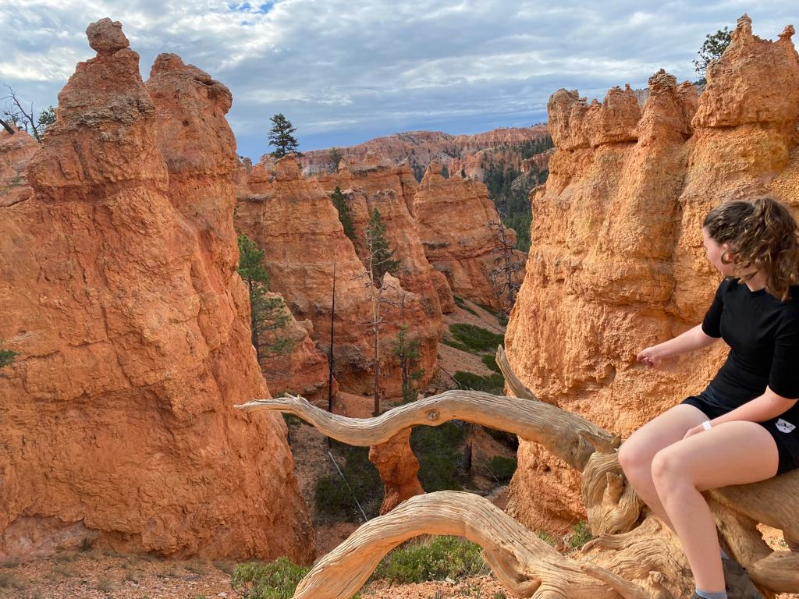

Mijn Reis
Op deze website zal ik jullie vertellen waar ik graag heen wil reizen, en waar ik al ben geweest. Ook zal ik wat algemenen informatie delen en wat leuke weetjes.

Op deze website zal ik jullie vertellen waar ik graag heen wil reizen, en waar ik al ben geweest. Ook zal ik wat algemenen informatie delen en wat leuke weetjes.
Ik ben Wieke in ben 18 jaar oud en hou van reizen. Ik hou er van om in de bergen te wandelen maar ook van steden bezoeken. Ik wil heel graag nog naar Japan, IJsland en nog een keer naar New York City. Ik wil graag veel van de wereld zien en verschillende culturen ontdekken.
 
